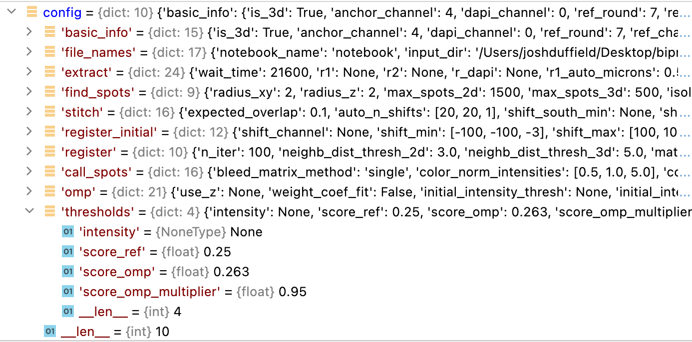

Notebook
The Notebook is a write-once data structure which is saved as a npz file. It stores the output of each stage of the pipeline as a separate NotebookPage. Each NotebookPage of the Notebook is itself a write-once data structure. Each NotebookPage may contain many different variables.
Times saved to Notebook and NotebookPage
Whenever a variable is added to a NotebookPage, in addition to saving the value, it saves the time
at which the variable was added (nbp._times). Likewise, the time at which a NotebookPage is
created (nbp._time_created), and the time at which it is added to the Notebook (nb._page_times)
are also recorded automatically. The time the Notebook was created is also
recorded (nb._created_time). This both serves as a record of what was done, as well as a
source for debugging and optimization.
Conceptually, the idea is that a Notebook is like a lab notebook. In a lab notebook, you write things in a separate section (here, NotebookPage) for each part of the experiment with the appropriate section name. You only add, you never erase or modify. Lab notebooks contain intermediate results, as well as the main data collected during the experiment. All times and labels of all results are written down.
Create Notebook
To create a Notebook, pass it the path to the file where the Notebook is to be saved (/Users/user/coppafish/experiment/notebook.npz) and the path to the configuration file (/Users/user/coppafish/experiment/settings.ini):
from coppafish import Notebook
nb_file = '/Users/user/coppafish/experiment/notebook.npz'
ini_file = '/Users/user/coppafish/experiment/settings.ini'
nb = Notebook(nb_file, ini_file)
Create just using config_file
The Notebook can also be created with just the configuration file through:
from coppafish import Notebook
ini_file = '/Users/user/coppafish/experiment/settings.ini'
nb = Notebook(config_file=ini_file)
config['file_names']['output_dir'] + config['file_names']['notebook_name'].
If nb_file already exists, the Notebook located
at this path will be loaded. If not, a new file will be created as soon as
the first NotebookPage is added to the Notebook.
When the Notebook is created, it will save the contents of the configuration file (nb._config) thus
there is no need to pass the config_file argument when re-loading a Notebook. You can just
run nb = Notebook('/Users/user/coppafish/experiment/notebook.npz').
Using Notebook outside the coppaFISH pipeline
Passing the configuration file to the Notebook allows for several features, however a Notebook can be created without it:
from coppafish import Notebook
nb_file = '/Users/user/coppafish/experiment/notebook.npz'
nb = Notebook(nb_file)
Adding a NotebookPage
To add a NotebookPage called page_name with variable var_1 = 5 to the Notebook, you can do the following:
from coppafish import NotebookPage
nbp = NotebookPage('page_name')
nbp.var_1 = 5
nb += nbp # or nb.add_page(nbp) or nb.page_name = nbp
Whenever a NotebookPage is added to the Notebook, it will trigger the Notebook to be saved (unless
the NotebookPage has a name listed in Notebook._no_save_pages).
The variable var_1 of the NotebookPage called page_name can then be accessed from the Notebook via
nb.page_name.var_1.
Adding variables to Notebook
Varibles of forms other than NotebookPages can be added directly to the Notebook e.g. nb.var_1 = 5.
However, when the Notebook is saved and re-loaded, variables added in this way will no longer be
present.
Deleting a NotebookPage
To delete a NotebookPage called page_name which is in the Notebook, run del nb.page_name.
You may want to do this, for example, to re-run a section of the pipeline with different parameters in the corresponding section of the configuration file.
Modifying a NotebookPage
The NotebookPage is a write-once data structure so once a variable has been added to it, it cannot be
changed (unless it is listed in NotebookPage._NON_RESULT_KEYS). I.e. the following will raise an error:
from coppafish import NotebookPage
nbp = NotebookPage('page_name')
nbp.var_1 = 5
nbp.var_1 = 10
Once a NotebookPage has been added to a Notebook, nbp.finalized will change to True and no more variables
will be allowed to be added to the NotebookPage:
from coppafish import NotebookPage
nbp = NotebookPage('page_name')
nbp.var_1 = 5
nbp.var_2 = 10 # fine as page not added to notebook yet
nb += nbp
nb.page_name.var_3 = 99 # will raise error as page is added to notebook now
To delete the variable var_1 run del nb.var_1. Again, you won't be able to do this once the
NotebookPage has been added to a Notebook.
coppafish Specific NotebookPages
The names of all the NotebookPages added to the Notebook through the course of the pipeline are given as the headers in the notebook_comments.json file. Then the bullet points give all the variables that are added to each NotebookPage.
When a NotebookPage has one of these names, an error will be raised if you try to assign a variable to it which is not listed in the relevant section of the notebook_comments.json file. When adding the NotebookPage to the Notebook, an error will be raised unless it contains all the variables listed in the relevant section of the notebook_comments.json file and no others.
Examples of adding a NotebookPage named thresholds to a Notebook are given below:
from coppafish import NotebookPage
nbp = NotebookPage('thresholds')
nbp.intensity = 0.01
nbp.score_ref = 0.25
nbp.score_omp = 0.263
nbp.score_omp_multiplier = 0.95
nb += nbp
from coppafish import NotebookPage
nbp = NotebookPage('thresholds')
nbp.intensity = 0.01
nbp.var_1 = 5 # Error here as 'var_1' is not listed in
# 'thresholds' section of notebook_comments.json
from coppafish import NotebookPage
nbp = NotebookPage('thresholds')
nbp.intensity = 0.01
nbp.score_ref = 0.25 = 5
nb += nbp # Error here as 'score_omp' and 'score_omp_multiplier'
# are listed in 'thresholds' section of
# notebook_comments.json but not added to page.
Describe
The comments given in the notebook_comments.json file can be accessed from
the NotebookPage by calling the describe
function. An example to print the comment for the variable gene_no in the omp page is given below:
nb.omp.describe('gene_no')
Numpy int16 array [n_spots]
gene_no[s] is the index of the gene assigned to spot s.
If describe is called from the Notebook instead,
it will loop through all NotebookPages in the Notebook and print the comment for each variable with the correct
name that it encounters:
nb.describe('gene_no')
gene_no in ref_spots:
Numpy int16 array [n_spots]
gene_no[s] is the index of the gene assigned to spot s.
gene_no in omp:
Numpy int16 array [n_spots]
gene_no[s] is the index of the gene assigned to spot s.
If describe is called from the Notebook
and finds the variable in the configuration file, it will print the section it was found in and its value. E.g.
for dp_thresh in the omp section:
nb.describe('dp_thresh')
No variable named dp_thresh in the omp page.
But it is in the omp section of the config file and has value:
0.225
Configuration File
The configuration file can be returned as a dictionary of dictionaries from the Notebook by using the function
get_config:
config = nb.get_config()

When the Notebook is re-loaded with a config_file (nb = Notebook(nb_file, config_file)), the configuration
file supplied will be compared
to the one saved in the Notebook (nb._config).
If the comparison indicates that the two are different, an error will be raised.
Otherwise, when the Notebook is loaded, the saved value of the configuration file
(nb._config) will be changed to the one given by the provided config_file.
What is compared?
Each NotebookPage added during the coppafish pipeline has a name which is the same as a section in the configuration file or the same apart from a _debug suffix.
Only sections with a corresponding NotebookPage in the Notebook are compared.
The file_names section is also ignored in the comparison as it is included in
Notebook._no_compare_config_sections.
So if the pipeline has been run as far as the
call_reference_spots
stage, the Notebook will not have the omp page.
In this case, the omp section of the config_file can be changed without causing an error
as indicated below:
[file_names]
input_dir = /Users/.../experiment1/raw
output_dir = /Users/.../experiment1/output
tile_dir = /Users/.../experiment1/tiles
round = Exp1_r0, Exp1_r1, Exp1_r2, Exp1_r3, Exp1_r4, Exp1_r5, Exp1_r6
anchor = Exp1_anchor
code_book = /Users/.../experiment1/codebook.txt
[basic_info]
is_3d = True
anchor_channel = 4
dapi_channel = 0
[file_names]
input_dir = /Users/.../experiment1/raw
output_dir = /Users/.../experiment1/output
tile_dir = /Users/.../experiment1/tiles
round = Exp1_r0, Exp1_r1, Exp1_r2, Exp1_r3, Exp1_r4, Exp1_r5, Exp1_r6
anchor = Exp1_anchor
code_book = /Users/.../experiment1/codebook.txt
[basic_info]
is_3d = True
anchor_channel = 4
dapi_channel = 0
[omp]
dp_thresh = 0.3452
; Allowed because variable is in the omp section
; and omp page not added to Notebook yet.
[file_names]
input_dir = /Users/.../experiment1/raw
output_dir = /Users/.../experiment1/output
tile_dir = /Users/.../experiment1/tiles
round = Exp1_r0, Exp1_r1, Exp1_r2, Exp1_r3, Exp1_r4, Exp1_r5, Exp1_r6
anchor = Exp1_anchor
code_book = /Users/.../experiment1/codebook.txt
[basic_info]
is_3d = True
anchor_channel = 4
dapi_channel = 0
[register]
n_iter = 52
; Not allowed because variable is in the register section
; but register page has been added to Notebook.
Changing basic_info mid-pipeline
It is quite common to want to change the basic_info section of the configuration file halfway through the pipeline without re-running the steps of the pipeline which have already been completed.
For example, we may have specified the wrong dye_names, but this is not used until the call_reference_spots
stage. Or after the find_spots or register sections, we may want to remove some problematic
tiles, rounds or channels (through use_tiles, use_rounds and use_channels).
But if the basic_info section of the configuration file is changed, an error would be raised unless the basic_info NotebookPage is deleted. The code below illustrates how to save a new Notebook with a different basic_info page:
from coppafish import Notebook
from coppafish.pipeline import set_basic_info
nb_file = '/Users/user/coppafish/experiment/notebook.npz'
# Save new notebook with different name so it does not overwrite old notebook
# Make sure notebook_name is specified in [file_names] section
# of settings_new.ini file to be same as name given here.
nb_file_new = '/Users/user/coppafish/experiment/notebook_new.npz'
ini_file_new = '/Users/user/coppafish/experiment/settings_new.ini'
# config_file not given so will use last one saved to Notebook
nb = Notebook(nb_file)
print('Using config file saved to notebook:')
print(f"use_channels: {nb.basic_info.use_channels}")
print(f"use_tiles: {nb.basic_info.use_tiles}")
# Change basic_info
del nb.basic_info # delete old basic info
nb.save(nb_file_new) # save Notebook with no basic_info page to new file
# so does not overwrite old Notebook
# Load in new notebook with new config file with different basic_info
nb_new = Notebook(nb_file_new, ini_file_new)
# add new basic_info page to Notebook
config = nb_new.get_config()
nbp_basic = set_basic_info(config['file_names'], config['basic_info'])
nb_new += nbp_basic
print(f'Using new config file {ini_file_new}:')
print(f"use_channels: {nb_new.basic_info.use_channels}")
print(f"use_tiles: {nb_new.basic_info.use_tiles}")
Using config file saved to notebook:
use_channels: [0, 1, 2, 3, 4, 5, 6]
use_tiles: [0, 1, 2, 3]
Using new config file /Users/user/coppafish/experiment/settings_new.ini:
use_channels: [1, 2, 5, 6]
use_tiles: [0, 2, 3]
[file_names]
input_dir = /Users/user/coppafish/experiment1/raw
output_dir = /Users/user/coppafish/experiment1/output
tile_dir = /Users/user/coppafish/experiment1/tiles
round = Exp1_r0, Exp1_r1, Exp1_r2, Exp1_r3, Exp1_r4, Exp1_r5, Exp1_r6
anchor = Exp1_anchor
code_book = /Users/user/coppafish/experiment1/codebook.txt
[basic_info]
is_3d = True
anchor_channel = 4
dapi_channel = 0
[file_names]
input_dir = /Users/user/coppafish/experiment1/raw
output_dir = /Users/user/coppafish/experiment1/output
tile_dir = /Users/user/coppafish/experiment1/tiles
round = Exp1_r0, Exp1_r1, Exp1_r2, Exp1_r3, Exp1_r4, Exp1_r5, Exp1_r6
anchor = Exp1_anchor
code_book = /Users/user/coppafish/experiment1/codebook.txt
notebook_name = notebook_new
[basic_info]
is_3d = True
anchor_channel = 4
dapi_channel = 0
use_channels = 1, 2, 5, 6
use_tiles = 0, 2, 3
file_names
The file_names section of the Notebook is treated differently to deal with the case where the various file locations have changed e.g. when accessing them from a different computer.
The file_names NotebookPage
is never saved when the Notebook is saved, and adding a NotebookPage called file_names
does not trigger a save. When the Notebook is loaded in, a file_names
NotebookPage will automatically be created and added to the
Notebook if the Notebook contains a basic_info NotebookPage.
The file_names NotebookPage will then inherit information from
the file_names section of the config_file which was passed to the Notebook
when loading it, in as explained below:
from coppafish import Notebook
nb_file = '/Users/user/coppafish/experiment/notebook.npz'
ini_file = '/Users/NEW_USER/coppafish/NEW_EXPERIMENT/settings.ini'
# config_file not given so will use last one saved to Notebook
nb_old = Notebook(nb_file)
print('Using config file saved to notebook:')
print(nb_old.file_names.output_dir)
print(nb_old.file_names.big_anchor_image)
# tile file path for round 0, tile 0, channel 0
print(nb_old.file_names.tile[0][0][0])
# config_file given so will update nb._config
nb_new = Notebook(nb_file, ini_file)
print(f'Using new config file {ini_file}:')
print(nb_new.file_names.output_dir)
print(nb_new.file_names.big_anchor_image)
# tile file path for round 0, tile 0, channel 0
print(nb_new.file_names.tile[0][0][0])
Using config file saved to notebook:
/Users/user/coppafish/experiment1/output
/Users/user/coppafish/experiment1/output/anchor_image.npz
/Users/user/coppafish/experiment1/tiles/Exp1_r0_t0c0.npy
Using new config file /Users/NEW_USER/coppafish/NEW_EXPERIMENT/settings.ini:
/Users/NEW_USER/coppafish/NEW_EXPERIMENT/output
/Users/NEW_USER/coppafish/NEW_EXPERIMENT/output/anchor_image.npz
/Users/NEW_USER/coppafish/NEW_EXPERIMENT/tiles/Exp1_r0_t0c0.npy
[file_names]
input_dir = /Users/user/coppafish/experiment1/raw
output_dir = /Users/user/coppafish/experiment1/output
tile_dir = /Users/user/coppafish/experiment1/tiles
round = Exp1_r0, Exp1_r1, Exp1_r2, Exp1_r3, Exp1_r4, Exp1_r5, Exp1_r6
anchor = Exp1_anchor
code_book = /Users/user/coppafish/experiment1/codebook.txt
[basic_info]
is_3d = True
anchor_channel = 4
dapi_channel = 0
[file_names]
input_dir = /Users/NEW_USER/coppafish/NEW_EXPERIMENT/raw
output_dir = /Users/NEW_USER/coppafish/NEW_EXPERIMENT/output
tile_dir = /Users/NEW_USER/coppafish/NEW_EXPERIMENT/tiles
round = Exp1_r0, Exp1_r1, Exp1_r2, Exp1_r3, Exp1_r4, Exp1_r5, Exp1_r6
anchor = Exp1_anchor
code_book = /Users/NEW_USER/coppafish/NEW_EXPERIMENT/codebook.txt
[basic_info]
is_3d = True
anchor_channel = 4
dapi_channel = 0
Also, as soon as a NotebookPage named basic_info is added to the Notebook,
the file_names NotebookPage will also be
added due to information in the Notebook._no_save_pages dictionary.